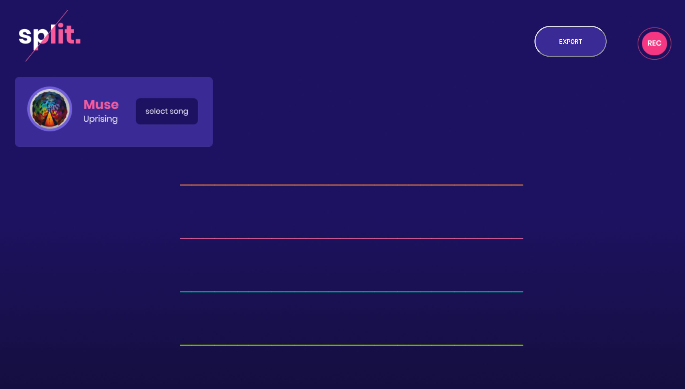
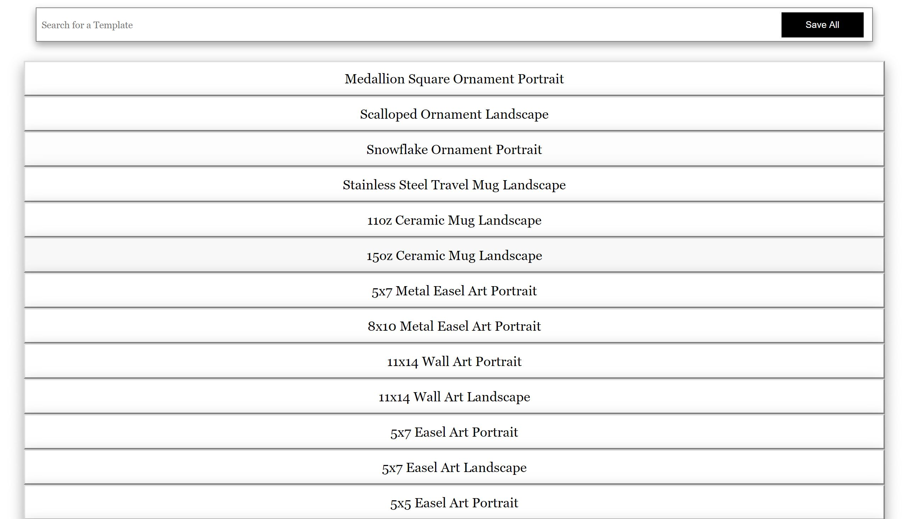
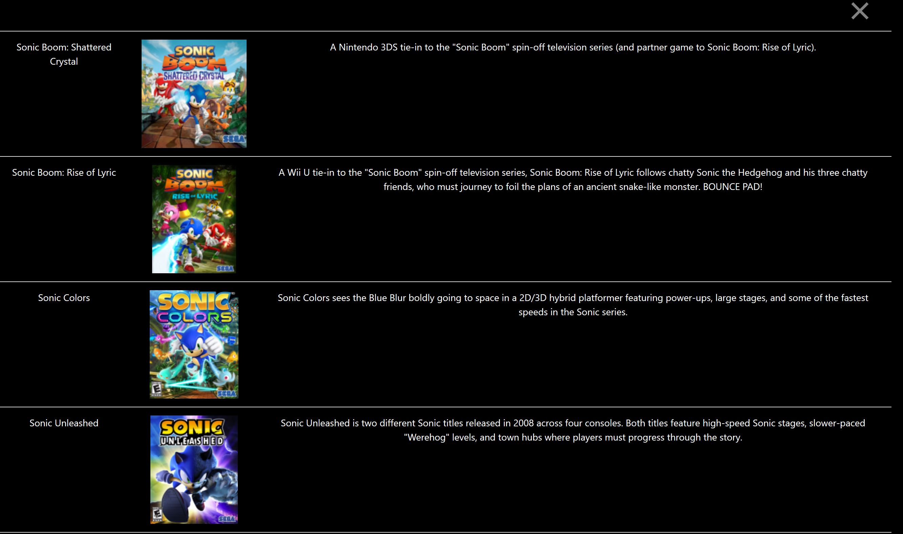

Projects
Here are some projects that I created or collaborated on
Audio Visualizer
Worked on with other teammates within RIT.
Languages: Javascript, HTML/CSS.
Each line represents a different instrument of the song and can be played seperately by pressing on keys 1, 2, 3, or 4.
The user can lock the keys they are pressing by pressing "L" on the keyboard.



Game Finder
This application uses Google and Gamestop APIs to help the user find the game they're looking for
Languages and Frameworks: HTML5, CSS3, Javascript and Firebase.
The user can search for a game, look at all of the options and then search for where the game is being sold.

